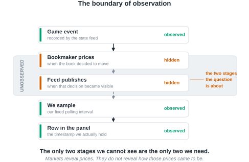
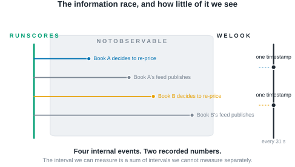
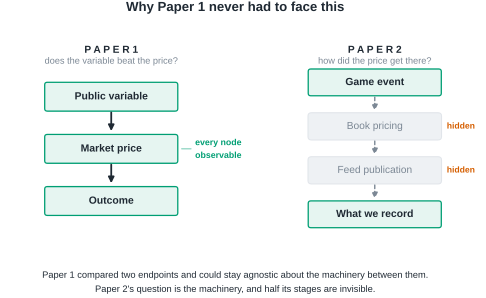
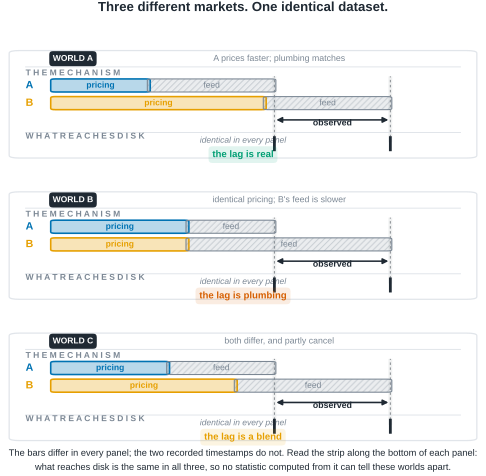
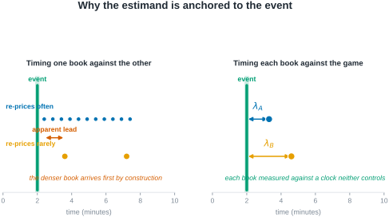
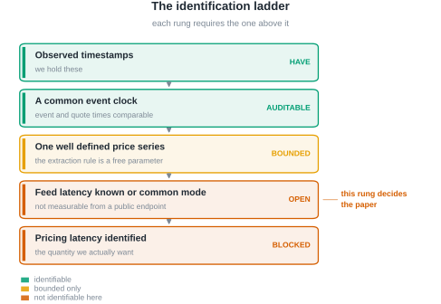
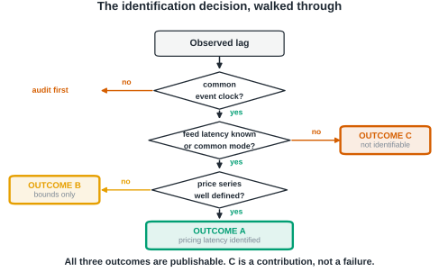
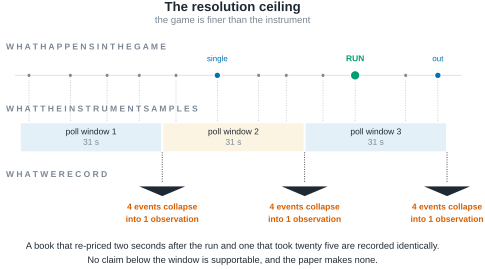
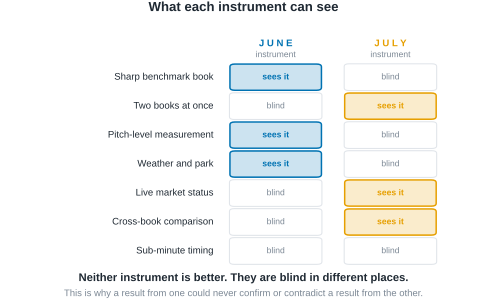
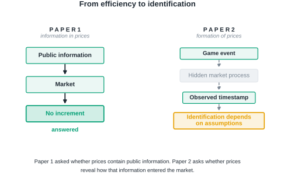

A companion study asked whether prices contain public information. This paper asks whether prices reveal how that information entered the market.
Working Paper · August 2026 · Gate applied: Outcome C — non-identification
Status and scope. The analysis plan in Section 6.5 is pre-registered, and Section 6.6 fixes four conditions that gate what may be reported. Those conditions have now been applied to the evidence. The outcome is C: the pricing contrast is not identifiable with this class of instrument. Condition 3 is satisfied by its documented-impossibility route; Conditions 1, 2 and 4 are not satisfied and are reported as failing throughout. Section 6.6 carries a dated amendment, made after the evidence was seen, that scopes those three conditions to estimate-reporting only — it does not deem them met. No numerical estimate of the pricing contrast is reported anywhere in this paper, and under the amendment's tripwire none may be until those conditions are satisfied in their original form.
A companion study found that a live baseball wagering market encompasses every public-information candidate tested against it: no variable in a ten-hypothesis ladder improved on the market's own forecast of remaining runs. That null is a statement about outcomes, and it invites a question about mechanism. The companion study asked whether prices contain public information; this paper asks whether prices reveal how that information entered the market. Information in prices and formation of prices are distinct questions, and the second does not follow from the first by adding data.
We take up the transmission question directly, and find that it is largely an identification problem. The delay between a game event and an observed price change decomposes into a bookmaker's pricing latency, its feed's publication latency, the staleness of the copy its distribution path delivers to us, and the sampling delay imposed by our own cadence. That decomposition is arithmetic. Only the last of the four is common-mode across books, and we measure the third rather than assume it away. The substantive difficulty is that only their sum is observed, and this paper is about what can and cannot be learned under that constraint. We show that three materially different markets, one in which a bookmaker genuinely prices faster, one in which pricing speeds are identical and only publishing infrastructure differs, and one in which both differ and partially offset, generate numerically identical timestamp data. No statistic computed from timestamps alone separates them.
Working from a two-book, thirty-one-second live quote panel matched to game-state events, we define an event-anchored response latency and state precisely the conditions under which its cross-book contrast is a statement about pricing rather than about plumbing. We show that several intuitive estimators of information leadership are mechanically confounded by update frequency and by the analyst's choice of which posted line to treat as the main line, and we characterize the resolution floor below which this class of instrument is silent. The design admits three outcomes, all of which we regard as publishable: identification of a pricing contrast, identification of bounds only, or a demonstration that the quantity is not identifiable without richer instrumentation. The price discovery literature answers our question directly where venue timestamps and order identifiers are available, because there the publication stage is pinned by the data rather than estimated; the contribution here is to characterize what remains learnable when it is not. The third is not a failure of the study. Much of the microstructure literature studies environments in which richer event and timestamp information is available than sportsbook endpoints provide, so the decomposition we confront can often be assumed away there rather than established. Showing precisely where it cannot be assumed away is itself a contribution.
Every pitch thrown in a Major League Baseball game can trigger dozens of price updates across sportsbooks before the next pitch is delivered. These are high-frequency markets in the ordinary sense, with one property that makes them an unusually clean laboratory for studying price formation: every contract settles within hours against an objective terminal payoff, so the quantity being forecast is eventually revealed and the forecast can be graded. Equity prices offer no such closure.
Market efficiency tests answer a question about outcomes. They ask whether some information, held by someone, would have improved on the price. When the answer is no, as it frequently is, the finding is reported and the matter closed. But a null of that kind is a statement about a mechanism whose operation was never observed. Something incorporated the information. The efficiency test does not say what, or how quickly, or through which participant.
This paper begins where a companion study ended. That study treated a sharp live betting line as an incumbent forecast of the runs remaining in a baseball game and asked whether any of ten publicly observable candidates, pitcher fatigue and velocity decay among them, carried incremental predictive content beyond it. None did, and the one candidate that appeared alive proved to be a post-treatment selection artifact.
The two studies stand in a natural progression rather than a sequence of increments. Paper 1 asked whether prices contain public information. This paper asks whether prices reveal how that information entered the market. The first is a question about the content of a price; the second is a question about its formation, and the two are answered with different instruments and different assumptions. The transition can be stated more precisely still. The companion study established that public baseball variables contain no incremental information beyond a sharp market observed at one-minute resolution; this paper asks whether that apparent efficiency is genuine, or whether it is partly an artifact of observing the market only after the information has already propagated through it. The companion study's closing section anticipates the question, listing cross-book propagation, the information half-life of a shock, and the microstructure limits of one-minute single-book snapshots among the things its data could not settle.
The obstacle is not statistical power. It is that the process of interest is unobserved. A baseball market is punctuated by discrete, publicly dated events, and each is followed, sooner or later, by a revised price; but between the event and the revision we record sit stages that no outside observer sees.

Figure 1. We never observe the pricing process itself. Of the five stages between a game event and a row in our dataset, the two in the shaded band are exactly the two the question is about: when the bookmaker decided to move, and when its feed made that decision visible. Everything we record sits below the boundary.
Box 1 makes the difficulty concrete before any notation is introduced.
Two sportsbooks are quoting the same game. A run scores. Book A updates its price 800 milliseconds later; Book B updates 1.6 seconds later. You observe both prices once every 30 seconds.
Can you conclude that Book A processes information faster?
No. You did not observe the pricing engines, the feed delays, or the moment the event actually occurred. You observed two timestamps, produced by a sampling process of your own construction, at a resolution nearly twenty times coarser than the difference you are trying to detect. Both books land in the same poll. The data are silent.
This paper is about what it takes to make them speak, and about being candid when they cannot.
The problem has a familiar shape. Astronomers infer the mass of a planet they cannot see from the wobble of a star they can, and the inference is only as good as the model of what lies between the observer and the object; much of the work is characterizing the instrument rather than the sky. Our position is the same. Markets reveal prices. They do not reveal how those prices came to be.
Two prices are therefore the minimum. A single book's response time confounds how fast the bookmaker reprices with how fast its infrastructure publishes and how fast the analyst happens to be sampling. Comparing two books raises the possibility that the shared components difference out. Whether they actually do is an architectural question about publishing infrastructure, not a statistical one, and it is the question on which the paper's central estimand stands or falls. Section 4 shows that three materially different markets generate numerically identical timestamp data, so the possibility cannot be settled by any statistic computed from the timestamps themselves; that result, illustrated in Figure 4, is the paper's core.
We frame this accordingly as a paper about identification in high-frequency markets, not as a second efficiency paper and not as a paper about sportsbooks. Sports betting is the laboratory, chosen because its information arrivals are discrete and precisely dated and its contracts settle against ground truth. The identification problem it exposes is general. Three consequences follow.
First, the estimand must be defined before the data are examined, because the intuitive estimators are wrong in a specific and instructive way. The obvious approach, timing one book's price change against the other's, is mechanically biased toward whichever book updates more often. A book that re-prices every thirty seconds will reach any given price level before a book that re-prices every eight minutes, regardless of which one is better informed. That is not leadership; it is sampling.
Second, the identification problem must be confronted rather than assumed away. The delay we observe is a sum of four delays, and only one of them is about pricing. Separating them requires either an independent measurement of transport latency or an argument that transport latency is common across books. Neither is free, and we do not assume either.
Third, the instrument's limits must be stated in advance. A panel sampled every thirty-one seconds cannot resolve sub-second price formation. If the economically interesting action happens below the sampling floor, no amount of care in the analysis will recover it, and the honest report is that the question is out of reach for this apparatus.
The paper is organized around those three commitments. Section 2 places the study against the literatures on market efficiency, price discovery, and cross-market timing, and states precisely which instrumentation those literatures rely on and we lack. Section 3 develops the conceptual framework and decomposes the observed delay. Section 4, the heart of the paper, treats identification: what can and cannot be learned from a two-book panel, and under exactly which assumptions. Section 5 describes the data and explains why this instrument differs fundamentally from the one used in the companion study, a difference that precludes any direct comparison of results. Section 6 states the estimation procedure and the pre-registered analysis plan, and closes by listing the objective conditions that must be satisfied before results may be reported. Section 7 applies those conditions to the completed evidence and reports what the instrument establishes; Section 8 discusses what that does and does not license, and what instrumentation would restore identification. Section 9 states the scope of the contribution.
A referee's first question about a paper like this is why the problem has not already been solved. The answer is not that the literatures below overlooked it. It is that in the settings where price discovery has been studied most carefully, the instrumentation available to the researcher resolves the problem by construction, and the question therefore never has to be posed. We organize this section around what each literature identifies, what data it identifies it with, and what happens to the argument when those data are unavailable.
The efficiency literature asks whether prices already embody available information. Fama (1970) sets the frame; the event-study tradition sharpened it to the speed of adjustment, with Patell and Wolfson (1984) measuring intraday adjustment to earnings and dividend announcements and Busse and Green (2002) tracking incorporation of televised analyst reports in real time. In wagering markets the same question has an unusually clean form because contracts settle against ground truth: Sauer (1998) surveys the evidence, Woodland and Woodland (1994) document a reverse favorite-longshot bias in baseball too small to exploit, and Thaler and Ziemba (1988) place the setting in the anomalies tradition. Croxson and Reade (2014) show soccer exchange prices updating swiftly and essentially fully on goal arrivals. More recent work finds imperfections in the price process itself: Simon (2024, 2025) rejects weak-form efficiency in moneyline movement, and Angelini and De Angelis (2026) measure contemporaneous underreaction to benchmark probability changes with predictable subsequent drift.
These studies identify a property of the price. None of them requires knowing when the bookmaker or the exchange internally decided to move, because the object of inference is the price level and its relation to information, not the timing of the mechanism that produced it. Our companion study sits squarely here: it applies the forecast encompassing framework of Chong and Hendry (1986) to a live betting line treated as an incumbent forecast, and its null is a statement of the same type.
The price discovery literature asks where a common efficient price is formed when the same asset trades in several venues. Hasbrouck's (1995) information shares and the Gonzalo and Granger (1995) permanent-transitory decomposition are the standard tools, and Putniņš (2013) offers a careful account of what those metrics do and do not measure. This literature is the closest ancestor of the present paper: it asks precisely our question, which venue moves first and why.
Its instrumentation is what makes it work. Information shares are estimated on venue-level quote and trade series carrying exchange-side timestamps, applied to a common clock, at a granularity fine relative to the leads being estimated. The publication stage is not a nuisance term to be estimated because it is pinned directly by the venue's own timestamp. Where that is unavailable, the metric does not become noisier; it becomes a different quantity.
A related tradition estimates leads and lags directly. Hasbrouck (1991) recovers the information content of trades from a bivariate vector autoregression; Chan (1992) analyzes the lead-lag relation between index futures and the cash market. Later work pushes to the latency frontier: Hasbrouck and Saar (2013) identify low-latency strategic activity using millisecond-stamped order-level messages, and Budish, Cramton, and Shim (2015) analyze the speed race itself using synchronized data on correlated instruments.
Two features of these designs deserve emphasis, because their absence defines our problem. First, order-level identifiers let the researcher follow an individual message rather than infer activity from a price series. Second, the timestamps are applied at the venue, so transport to the researcher does not enter the estimand. Ding, Hanna, and Hendershott (2014) make the second point especially clearly: they compare the consolidated feed with direct exchange feeds and quantify the dissemination latency between them, which is possible precisely because both feeds are observable. Their result is the strongest evidence we know of that transport latency is economically material rather than a rounding error, and it is also a demonstration that measuring it requires holding the two feeds side by side.
Public sportsbook endpoints supply none of that instrumentation. There are no order-level identifiers, because there is no order book to observe; a bookmaker posts a price rather than matching a queue. There is no venue-side timestamp on the price change, only the time at which our own poll retrieved it. There is no second feed from the same book against which dissemination could be differenced, as Ding, Hanna, and Hendershott could difference the consolidated and direct feeds. And the sampling interval is set by the researcher's own polling rather than by the venue's messaging.
The consequence is not that estimation becomes harder. It is that the estimand changes. In the price discovery setting the object of inference is a property of the market, and the apparatus is transparent. Here the apparatus enters the estimand, and the observed quantity is a sum of four terms: the bookmaker's pricing latency, its feed's publication latency, the staleness of the copy its distribution path delivers to us, and the sampling delay imposed by our own cadence. Only the last is ours to set, and setting it finer separates none of the other three. That is the gap this paper occupies.
The relevant methodological literature is therefore not price discovery but identification. Manski (2003) and Tamer (2010) develop the position we adopt: when a parameter is not point-identified by the available data, the disciplined response is to characterize what the data do support, report bounds where bounds exist, and state the additional information that would restore identification. Applied to transmission, that means treating a latency estimate as a joint statement about a market and about the instrument that observed it, and refusing to report the first without defending the second.
The present paper is motivated not by disagreement with these literatures, but by a different observational setting. Where venue timestamps and order identifiers are available, the questions of Sections 2.2 and 2.3 are answerable as posed and our concerns do not arise. Where they are not, an estimate that would be unremarkable in those settings becomes an inference resting on an unstated assumption about publishing infrastructure. We take the second case seriously because it is the case most outside researchers actually face, and because sportsbook markets make it possible to state the problem precisely rather than in the abstract.
This positioning has a consequence we want to be explicit about. The contribution stated here does not depend on the sign or significance of any latency estimate we eventually report. If every estimate proves null, the paper still establishes what a public-endpoint observer can and cannot learn about price formation, which assumptions would have to hold for a leadership claim to be warranted, and what instrumentation a subsequent study would need to build. The identification problem, not the baseball application, is the durable object.
Consider a discrete, publicly observable event in a baseball game occurring at clock time
t_E: a run scores. The event changes the conditional distribution of the game's final total, and a
bookmaker offering a live total on that game will, at some point, revise its posted number. An
outside observer records the revision at some later time. Between the event and the record lie four
distinct delays, produced by four distinct mechanisms.
Pricing latency, which we write as the interval between the event and the bookmaker's internal decision to revise, is the economically meaningful quantity. It reflects how quickly the bookmaker detects the event, updates its model, and commits to a new number. Differences in pricing latency across books are differences in how the market processes information.
Feed latency is the interval between the bookmaker's internal revision and the moment that revision becomes visible on the public endpoint we query. It is a property of publishing infrastructure, caching, and content delivery, not of judgment about baseball.
The interval between publication and our record is where an earlier version of this paper was imprecise, and the imprecision mattered. It is tempting to call the remainder "observation latency" and treat it as a single delay belonging to our collector. It is two delays belonging to two different parties, and only one of them is ours.
Delivery staleness is the interval between a revision becoming available at the bookmaker's origin and the copy of it that our request actually receives. Public sportsbook endpoints sit behind content-delivery networks, so a response can be assembled from an object generated some time ago. This is a property of the book's distribution path, not of our cadence, and Section 5 reports it as measured rather than assumed: it is large, book-specific, and the two books do not even describe it under the same convention.
Collector sampling delay is the interval between the moment a revision is retrievable by us and the moment we retrieve it. This one genuinely is a property of our own instrument. With a polling interval of roughly thirty-one seconds, a revision that becomes retrievable immediately after a poll waits, on average, about fifteen seconds to be seen, and up to thirty-one seconds in the worst case. Because a single collector polls both books on one schedule, this term — and only this term — is common-mode by construction.

Figure 2. Four internal events; two recorded numbers. Each book decides to re-price and each book's feed publishes that decision. None of the four is visible. What we hold is one timestamp per book, and the interval we can measure is a sum of intervals we cannot measure separately.

Figure 3. Paper 1 never needed to identify internal latency. It compared two endpoints, a public variable and a realized outcome, with the market price between them, and every node it required was observable. This paper's question is the machinery itself, and two of its four stages are hidden from any outside observer.
The data contain only the sum. For book b and event E, the observed arrival delay is
Δt_b(E) = λ_price_b(E) + λ_feed_b(E) + λ_deliv_b(E) + λ_samp(E)
with the terms carrying deliberately unequal status:
| Term | What it is | Status in this study |
|---|---|---|
λ_price_b |
the bookmaker's internal decision to revise | unobserved — the economically meaningful quantity |
λ_feed_b |
origin publication of that decision | unobserved |
λ_deliv_b |
delivery of the published state to our request | measured, book-specific (Section 5) |
λ_samp |
our polling cadence | controlled, common-mode by construction (no b subscript) |
As an accounting identity the sum is unremarkable, and we do not present it as a contribution. Writing a delay as a sum of its parts is bookkeeping. What matters is the consequence: no manipulation of a single book's series recovers the individual terms, because only the left-hand side is ever observed. Everything difficult about this paper follows from that sentence, which is why the identification section is longer than the estimation section.
The four-way split is not pedantry. Collapsing λ_deliv and λ_samp into one "observation latency"
invites the inference that the whole remainder is common-mode because the polling schedule is shared
— an inference this paper made in an earlier draft and its own instrument later refuted. Separating
them moves one term from assumed away to measured, and confines the common-mode claim to the one
term that can support it.
If the second and third terms were identical across books, the cross-book difference would remove them:
Δt_A(E) - Δt_B(E) = λ_price_A(E) - λ_price_B(E)
and the contrast would isolate the economics. This is the hope that motivates a two-book design, and it is an assumption, not a fact.

Figure 4. Identical observations can arise from different underlying markets. In the first world a bookmaker genuinely prices faster and the publishing infrastructure is equal, so the observed lag means what it appears to mean. In the second, the two bookmakers price at identical speed and the entire observed lag is produced by one book's slower feed. In the third, both differ and partially offset. The observed timestamps, marked by the dashed guides, fall in exactly the same places in all three panels. The datasets are numerically identical; the markets are not. Any statistic computed from timestamps alone assigns the same value to all three, so distinguishing them requires evidence from outside the timing series.
Only λ_samp survives differencing for free. Our collector polls both books on one schedule, so the
sampling delay is drawn from the same distribution for each and largely cancels in a cross-book
contrast. The temptation is to extend that argument to the whole interval between publication and
observation — and an earlier draft of this paper did exactly that. Our own instrument refuted it.
λ_deliv is book-specific and large: Section 5 reports one book whose delivered staleness is
accounted for exactly, to the second, by a cache-age header on every one of 3,500 cached responses
and vanishes entirely on the 116 that missed the cache, and a second book that rewrites the
corresponding header at the edge so its responses appear instantaneous while separately reporting
payload ages of up to nine minutes. The two books do not merely differ in how stale their data are;
they differ in what staleness they claim to be reporting.
So λ_feed is not the only non-common-mode term, and two of the four now resist the differencing
argument rather than one. This cuts both ways, which is why it belongs here rather than in a
robustness appendix. It makes identification harder: a cross-book contrast no longer isolates
pricing merely because the polling schedule is shared. It also makes the problem tractable in a way
an assumption never could, because λ_deliv is measured — a quantity we can subtract and bound
rather than one we must hope is small. Whether what remains is material relative to the pricing
differences we hope to detect is precisely what Section 4 sets up and Section 7 answers — in the
negative, as it turns out, because the term that resists differencing is not λ_deliv but λ_feed.
A tempting alternative avoids the event entirely: observe when each book arrives at a given price level and call the earlier one the leader. This is mechanically defective.

Figure 5. A denser book leads by construction, not by insight. Left: a book that re-prices frequently passes through any given price level before a book that re-prices rarely, purely as a consequence of update density. A leadership statistic built on book-to-book arrival times reports this sampling artifact as information leadership. Right: anchoring each book's response to the exogenous game event measures each against a clock that neither book controls, so update density no longer confers a spurious advantage.
The game event is exogenous to both books in the relevant sense: runs are not caused by bookmaker quoting behavior. Anchoring to it converts a comparison between two endogenous, differently sampled series into two comparisons against a common external clock. This does not solve the feed-latency problem, but it removes the frequency confound, which is a distinct and more easily made error.
One structural fact about the instrument shapes the analysis and is easy to get wrong. The posted live number is a full-game total, not a forecast of remaining runs: it is the expected final combined score, incorporating runs already scored. Consequently a run that scores enters the posted number with a positive sign, partially offset by the reduction in scoring opportunities that remain. A revision following a run is therefore expected to be upward, and its magnitude is a pass-through fraction rather than an elasticity. We verify this property directly in Section 5 rather than assuming it, because the opposite convention would reverse the sign of every response we measure.
This section is the paper's core contribution. We state the assumptions under which the cross-book contrast identifies a pricing difference, examine each against what is known about the instrument, and describe what remains estimable when an assumption fails.
As Figure 4 makes clear, the target of inference cannot be read off the data; it must be defined and
then argued for. Let E index discrete game events with clock times t_E, and let t_b(E) denote the time of book
b's first main-line revision attributable to E. Define the event-anchored response latency
λ_b = E[ t_b(E) - t_E ]
and the cross-book contrast Δλ = λ_A - λ_B. The target of inference is Δλ, and the question the
paper asks is under what conditions Δλ is a statement about pricing rather than about plumbing.
A1. Event exogeneity. Game events are not caused by bookmaker quoting behavior. This is uncontroversial in this setting and is the reason event anchoring is available to us at all.
A2. Clock comparability. Event timestamps and quote timestamps are on a common, comparable
clock. This is not automatic. Event times are derived from one upstream provider and quote times from
another, and either may be a publication time rather than an occurrence time. A2 requires a direct
audit of timestamp provenance, and any residual skew must be quantified rather than assumed away,
because a constant skew shifts both λ_A and λ_B equally but a book-specific skew is
indistinguishable from a pricing difference.
A3. A well-defined main line. The response t_b(E) presupposes a single price series per book.
Books post multiple simultaneous total lines, a main line and alternates, without a discriminator.
Reasonable rules for extracting the main line disagree with one another on a large majority of
observations, and downstream statistics move materially depending on the choice. A3 therefore
requires a fixed, documented, and tested extraction rule, together with a demonstration that the
conclusions do not depend on it.
A4. Separability of transport from pricing. This is the binding assumption, and Figure 4 is its
statement in visual form. Δλ identifies the
pricing contrast only if feed latency is common-mode across books, or if a book-specific transport
component can be independently measured and removed. We do not assume A4 holds. Establishing whether
it holds, or demonstrating rigorously that it cannot be established with instruments of this class,
is the paper's principal empirical task.
A5. Sufficiency of two books. With two books, a discrepancy is detectable but not attributable: if one book behaves anomalously there is no third observation to adjudicate which is anomalous. A5 therefore concerns robustness rather than point identification, and it is either satisfied by adding a third live source or addressed by an explicit outlier-detection procedure that does not require one.
A6. Non-arbitrary attribution. The mapping from an event to "the revision caused by it" requires an attribution window. A window chosen after inspecting the data is a researcher degree of freedom capable of manufacturing an effect. A6 is satisfied by pre-registration, which is why the window is fixed in Section 6.5 before any estimate is produced.
The design admits exactly three outcomes, and we commit in advance to reporting whichever obtains.
Outcome A. The pricing contrast is identified. The clock audit passes, feed latency is shown to be common-mode or is independently measured, and the extraction rule is shown not to drive the result. The cross-book contrast is then a statement about how two bookmakers process information.
Outcome B. Only bounds are identified. Some assumption holds partially: transport latency is bounded but not known, or the result is directionally stable but magnitude-sensitive to the extraction rule. The reportable object is then an interval within which the pricing contrast must lie, together with the assumption that produced it.
Outcome C. The quantity is not identifiable with this class of instrument. No external measurement of feed latency is obtainable from public endpoints, and no argument establishes common-mode behaviour. This is the case in which the three worlds of Figure 4 remain observationally equivalent no matter how much data accumulates. The reportable result is then a demonstration, not a guess: a proof that timestamp data from public sportsbook endpoints cannot separate market behaviour from publishing infrastructure, together with a specification of the additional instrumentation that would be required.
We want to be explicit that Outcome C is a result and not a failure. Much of the market microstructure literature works in settings where researchers observe richer event and timestamp information than public sportsbook endpoints provide: exchange-side sequencing, order-level identifiers, and venue timestamps that pin the publication stage directly. Where that information is available, the decomposition this paper confronts can be handled by construction. Where it is not, the discipline is to demonstrate its unavailability rather than to proceed as though the richer setting obtained. A paper that establishes where identification breaks down tells a subsequent researcher what to build.

Figure 6. Identification requires assumptions, not computation. The requirements form a ladder, and each rung depends on the one above it. We hold the top two. The third is a methodological choice we can fix and test. The fourth, knowledge of feed latency, is not obtainable from public endpoints, and the fifth depends on it. The colour of the fourth rung is what determines whether this paper reports Outcome A, B, or C.

Figure 7. The paper does not presuppose which branch it takes. The same logic, as a decision the reader can walk. All three terminal states are publishable, and the third is the one a study is least likely to report.
An instrument cannot report structure below its sampling interval.

Figure 8. The instrument itself limits what can be learned. The game is finer than the sampling window. Pitches, balls, strikes, and the run itself arrive on a scale of seconds; our sampling collapses everything inside a thirty-one-second window into a single observation. A book that re-priced two seconds after the run and one that re-priced twenty-five seconds after it are recorded identically. This bounds the paper's ambition: no claim below the window is supportable, and we make none. The figure describes the apparatus, not the market.
This limit is worth stating plainly because it bounds the paper's ambition. Financial microstructure research often concerns latencies measured in microseconds. Nothing in this design speaks to that regime. What it can speak to is the slower, human-and-model-mediated process by which a sportsbook absorbs a publicly visible event, and whether two such processes can be distinguished from outside.
Identification arguments are usually presented as the assumptions that survived. That presentation hides the work. Below is the full set this study has put to an observable test, including — and especially — the ones that failed. A route that has been closed by measurement is more informative than one that was never opened, because it tells a later researcher not to spend the instrument on it.
Table 1. Every identification assumption this study has tested, and what became of it. "Rejected" means an observable test was run and the assumption did not survive it.
| Assumption | Observable test | Result | Status |
|---|---|---|---|
| Collector sampling delay is common-mode | shared polling schedule, both books | holds by construction | Supported |
| Payload timestamp dates a price revision | does it move on price changes, and only then | moves on all price changes and on 98.6% of others | Rejected |
| Delivered ordering is publication ordering | successive polls of the same market | 28.4% arrive out of order | Rejected |
| Cache-age headers are comparable across books | same header, both books | one exact to the second, one rewritten at the edge | Rejected |
| Scheduled-start field dates publication | does it move with price | constant within a market | Rejected |
| Delivery staleness is negligible | measured directly | median 115 s, 90th percentile 549 s on one book | Rejected |
| Delivery staleness is measurable | cache-age header versus receive time | exact on one book, bounded on the other | Supported |
| Feed publication latency is separable from pricing | exhausted: no publication clock on either book | demonstrated unattainable on this instrument class | Closed — not identifiable |
| Cross-book contrast isolates pricing | requires the row above | follows from it | Closed — not identifiable |
| A third book resolves the remaining ambiguity | pre-registered gate (Section 6.6) | gate not satisfied; data does not exist | Open |
The shape of this table is the paper's argument in miniature. Six routes from a timestamp to a publication time are closed, and closed by measurement rather than by assertion. One term that a previous draft assumed away turns out to be measurable, which is the single piece of good news. The two rows that carry the estimand are now closed in the negative: not open questions awaiting more data, but routes demonstrated to be unavailable on instruments of this class. That determination is the paper's result, reached through the pre-registered gate of Section 6.6 rather than around it. A reader who wants to know why this paper is about identification rather than about a leadership estimate can read the right-hand column.
The data are generated by a continuously running collector that polls two sportsbooks and a game-state provider on a fixed schedule and appends every observation to an append-only panel. Table 2 states its specifications. These are verifiable facts about the apparatus rather than findings, and we state them as such.
Table 2. Instrument specifications. These are properties of the measurement apparatus, verifiable by inspection of the panels, not estimates.
| Property | Value |
|---|---|
| Sampling cadence (live) | approximately 31 seconds, median, both books |
| Books observed | two, both retail-facing |
| Games with live quotes | in excess of one hundred, accumulating |
| Quote fields | posted line, both sides' prices, live flag, market status |
| Market status coverage | one book only |
| Game state | inning, half, outs, base occupancy, score, pitch count, times through order |
| Line semantics | full-game total, verified against pregame distribution |

Figure 9. Different instruments reveal different phenomena. The June apparatus saw a sharp benchmark book, pitch-level measurement, and weather; it could not see two books at once or a market's live status. The July apparatus sees the second book and the status stream but is blind to everything the first could measure. Neither is better. They are blind in different places, which is why a result from one cannot confirm or contradict a result from the other.
Three absences are load-bearing for interpretation and are properties of the design rather than accidents of a particular sample.
There is no sharp benchmark book. Both observed books are retail-facing. The companion study used a sharp book as its incumbent forecast; nothing in this panel plays that role, and the leadership question here is therefore about two retail books rather than about a sharp-to-retail information cascade.
There are no pitch-level or meteorological covariates. The companion study's feature set is unavailable here.
Market status is asymmetric. One book publishes an explicit open, suspended, or removed state; the other publishes nothing. Any analysis that filters on tradeability can therefore only be applied to one book, and applying it to one and not the other introduces selection that favors the filtered book.
λ_deliv is the one hidden term this instrument can see, because the transport that produces it
describes itself. Alongside every quote the collector records the response's HTTP metadata and any
timestamp fields carried in the payload, and it writes a row whenever a market's line, prices, or
timestamps change. Table 3 reports what one slate of that panel establishes. These are properties of
the books' distribution paths, measured, not estimated.
Table 3. Delivery and publication metadata, 8,463 market transitions over one slate. Verifiable by inspection of the provenance panel.
| Property | Book A | Book B |
|---|---|---|
| Delivered staleness explained by the cache-age header | exactly, on 3,500/3,500 cached responses | header rewritten at the edge; unexplained |
| Staleness on responses that missed the cache | none (116 responses) | not separately identifiable |
| Payload age reported by the transport | ~30 s, tightly concentrated | median 115 s, 90th percentile 549 s |
| Publication timestamp in the payload | none | event-level field present |
| That field moves when the price moves | — | on 1,094/1,094 price changes |
| That field moves when the price does not move | — | on 98.6% of other transitions |
| Ordering of that field across successive polls | — | 28.4% arrive earlier than the previous poll |
| Scheduled-start field behaves as a publication clock | no (equals first pitch) | no |
Three consequences follow, and they are the reason this subsection sits in the data section rather than in an appendix.
First, λ_deliv is real, book-specific, and of a magnitude that matters. One book's delivered
staleness is a clean, near-constant offset that its own headers account for to the second; the
other's is an order of magnitude larger and variable. Any cross-book timing contrast that ignores
this is contaminated by it.
Second, neither book publishes a usable publication clock. One exposes nothing. The other exposes a field that does move on every price change — but also on nearly every transition without one, which makes it an event-level heartbeat rather than a per-market stamp. It licenses the negative inference (a price cannot have moved while it stood still, an exclusion that held on all 1,094 price changes, with a 95% upper bound of 0.27% on violations) and not the positive one. It cannot date a revision.
Third, and most damaging to any timestamp-based approach, the delivered ordering is not the publication ordering. More than a quarter of that field's transitions arrive earlier than the value in the preceding poll, and those reversals overwhelmingly accompany a higher reported payload age. A distribution network serving objects of differing age does not merely delay a market state, it can reorder it. This is not noise that averages out over more data: it is a property of the channel, and it places a floor on the timing resolution of any study drawing on public endpoints of this class, including this one.
It is tempting to treat this dataset as a second sample of the companion study's population. It is not. The two differ in the benchmark book, in the available covariates, and in the sampling cadence. Any difference in results between them would be jointly attributable to the passage of time and to the change of instrument, with no way to apportion between the two. We therefore make no claim in either direction about the companion study's conclusions. A temporal replication of that study requires re-running its own instrument, and is a separate exercise reported elsewhere.
Events are extracted from the game-state panel as changes in the combined score between consecutive observations. The event time is the timestamp of the first observation exhibiting the new score, which is itself subject to the provider's own publication delay; A2 concerns exactly this, and the audit described in Section 6.6 quantifies it. Events are typed by magnitude, since a solo home run and a bases-clearing double are different information arrivals.
For each book, the main line is extracted per observation timestamp under a single fixed rule, and the series is reduced to the sequence of distinct quote states. Repeated identical quotes are not revisions and are collapsed. The extraction rule is fixed in advance, and the sensitivity of every reported quantity to that choice is reported alongside it, per A3.
A revision is attributed to an event if it is the first distinct main-line change occurring within a fixed post-event window. The window is stated in the pre-registered plan below. Events whose windows overlap a subsequent event are flagged and analyzed separately, since attribution is ambiguous when two information arrivals are closer together than the response time being measured.
The unit of replication is the game, not the observation. Quotes within a game are strongly dependent, and treating them as independent produces intervals that are far too narrow. All estimation therefore proceeds by computing a per-game statistic and treating the game as the sampling unit, with intervals constructed accordingly.
Every item below exists to prevent one of the failure modes in Figure 4 from being mistaken for a finding. The following is fixed before any estimate is computed. Departures from it will be reported as departures.
Δλ.Δλ, reported with a game-clustered interval.The Results section of this paper remains unwritten until all four of the following hold, each verified and recorded:
Stating these in advance is the point. A paper that fixes its design before seeing its evidence cannot be reshaped by the evidence, and a null that arrives under those conditions carries the same weight as a finding.
This amendment was made after the evidence was seen. That is precisely the move a pre-registration exists to prevent, so it is recorded here in full rather than folded silently into the conditions above, which are reproduced byte-for-byte as originally fixed. A reader who believes the amendment is self-serving can evaluate the paper against the original four conditions, under which the Results section would remain unwritten. We think that reader is owed the ability to make that check.
What prompted it. Applying the four conditions literally to the completed evidence produced a result the pre-registration did not anticipate: Condition 3 was satisfied by its third route — the documented-impossibility route — while Conditions 1, 2 and 4 were not satisfied. Condition 3's own text says that route "converts the paper into a pure identification result." But Conditions 1, 2 and 4 exist to make a reported estimate trustworthy: they guard against an extraction rule driving a magnitude, against incomparable clocks corrupting an event-anchored latency, and against a two-book panel having no outlier check. Under a pure identification result there is no estimate for them to guard. Read literally, the gate held the Results section hostage to conditions protecting a deliverable the gate itself had already excluded.
What changes. Conditions 1, 2 and 4 are hereby scoped to estimate-reporting only. They bind whenever this paper, or any successor drawing on this instrument, reports a numerical estimate of the pricing contrast or of any quantity derived from it. They do not gate the reporting of a demonstration that the quantity is not identifiable.
What does not change, and this is the substance of the amendment. Conditions 1, 2 and 4 are not waived, not weakened, and not deemed satisfied. Their status is unchanged: Condition 1 fails (the invariance demonstration was run and returned non-invariance), Condition 2 is unsatisfied (the clock audit has never been performed), Condition 4 fails (no third live source, no outlier procedure in code). They are recorded as failing conditions throughout. Condition 3 is untouched by this amendment in both wording and scope. No threshold, decision rule, or analysis plan is altered.
Tripwire. If any estimate of the pricing contrast is ever reported — in this paper, a successor, a talk, or a repository artifact — Conditions 1, 2 and 4 bind again in their original form and must be satisfied first. Their current failure is not spent by this amendment; it is deferred to the moment an estimate is attempted. In particular, the extraction-rule non-invariance recorded below is not a defect this amendment cures. It is an unresolved obstacle to any future estimate, and it is reported as such.
The conditions were applied literally to the evidence in the project repository. The full memorandum
is ops/GATE_DETERMINATION_66.md; the determination is summarized here.
| Condition | Status | Basis |
|---|---|---|
| 1. Well-defined main line | Failed | Rule is fixed in committed code and reproduces the record; the required invariance demonstration returned non-invariance: 4.7× / 1.1× / 9.5× across three defensible extraction rules, which agree on 28.6% of groups. |
| 2. Clock comparability | Unsatisfied | The audit has never been performed. The provenance measurements concern how a quote reaches us, not whether the event clock and the quote clock are comparable. |
| 3. Transport separability | Satisfied, third route only | See below. |
| 4. Robustness support | Failed | Two live books, not three; no outlier-detection procedure exists in code. |
Condition 3 requires care, because it is the one that moved and the temptation to overstate it is
exactly what a pre-registration resists. Its second route — a defended argument that transport
is common-mode — is closed: it was this paper's earlier argument, and Section 5.3 measures it false.
Its first route is not satisfied, and the distinction is not pedantic. Section 5.3 reports an
independent measurement of a book-specific transport component, which sounds like the condition as
written. It is a different quantity. What is measured is λ_deliv, the staleness of the copy
delivered to us, visible only because the distribution network describes itself. What Condition 3
names is λ_feed, the delay between a bookmaker's internal revision and its publication at origin.
That term remains as hidden as it ever was. Measuring a term adjacent to the one required does not
satisfy the requirement, and we do not record it as satisfied.
Its third route is satisfied. Neither book exposes a usable publication clock: one exposes none, and the other an event-level heartbeat that moves on 98.6% of transitions without a price change and whose values arrive 28.4% out of order, because the delivery network serves objects of differing age. A clock that cannot order its own values cannot date a revision. The absence is quantified under a coverage rule fixed before any of this data existed, which is what makes it a demonstration rather than a report of not having found something.
The outcome is C. Outcome A is excluded twice over: λ_feed is neither common-mode nor
measured, and the extraction rule demonstrably drives the result. Outcome B deserves the closer look,
because its second disjunct — "directionally stable but magnitude-sensitive to the extraction rule"
— describes our extraction finding exactly. B fails on its own stated deliverable. B's reportable
object is an interval within which the pricing contrast must lie, and constructing one requires
bounding the transport terms. λ_deliv is bounded; λ_feed has no bound of any kind. The
directional stability that B describes is stability of the observed contrast, and treating that as
a bound on the pricing contrast would assume away the decomposition this paper exists to confront.
Outcome C's two clauses both hold: no external measurement of feed latency is obtainable from these
endpoints, and no argument establishes common-mode behaviour. The three worlds of Figure 4 remain
observationally equivalent no matter how much data accumulates.
We record that C is the outcome this design flagged as least likely to be reported and hardest to defend. It is not the convenient branch, and it was not chosen.
This section reports what the instrument establishes. It does not report a pricing contrast, a publication-latency estimate, or an interval containing either, because the gate of Section 6.6 returned Outcome C and those objects are not identified. What follows is the evidence that produced that determination, presented in the order the conditions are stated.
Throughout, the four components of the observed arrival delay are held apart. λ_price is the
bookmaker's internal decision to revise; λ_feed is the delay until that decision is published at
origin; λ_deliv is the staleness of the copy the distribution path hands us; λ_samp is our own
polling delay. Only λ_deliv and λ_samp are measured below. Nothing here measures λ_feed, and
no statistic below should be read as bearing on λ_price.
Applying the four pre-registered conditions to the completed evidence yields one satisfied condition and three unsatisfied ones.
Table 4. The pre-registered gate, applied. Conditions 1, 2 and 4 are not satisfied; the amendment of Section 6.6 scopes them to estimate-reporting and does not deem them met.
| Condition | Status | What the evidence shows |
|---|---|---|
| 1. Well-defined main line | Failed | Rule fixed in committed code and reproduces the historical record; the required invariance demonstration returned non-invariance (§7.2). |
| 2. Clock comparability | Unsatisfied | The audit was never performed (§7.3). |
| 3. Transport separability | Satisfied, third route only | Common-mode refuted; λ_feed unmeasurable on this instrument (§7.4). |
| 4. Robustness support | Failed | Two live books, not three; no outlier procedure in code (§7.5). |
Outcome A requires that feed latency be common-mode or independently measured, and that the
extraction rule be shown not to drive the result. Neither holds. Outcome B requires a reportable
interval within which the pricing contrast must lie; constructing one requires bounding the
transport terms, and λ_feed carries no bound of any kind. Outcome C's two clauses both hold: no
external measurement of feed latency is obtainable from these endpoints, and no argument establishes
common-mode behaviour.
The first condition asks for an extraction rule fixed in code, tested, and shown not to drive the primary statistic. The first two hold. The third fails, and it fails on evidence rather than on absence of evidence.
Three defensible rules select a market's main line from the quotes posted at one instant: the most balanced quote by implied probability, the modal line for that market over the contest, and the median posted line. Regenerated from committed code at the as-of date of the historical record, they disagree far more often than they agree, and the headline magnitude moves with the choice.
Table 5. Main-line extraction, three rules, same data, regenerated at the historical record's
as-of instant (2026-07-19T17:29:50Z). The unit is a matchup group: the game key in this panel
is a matchup string rather than a unique game identifier, so a series between the same two clubs
pools across dates.
| Rule | Direction | Matchup groups | Ratio of re-pricing frequency |
|---|---|---|---|
| balanced-odds | FanDuel ≥ Bovada | 53 of 60 | 4.7× |
| modal anchor | FanDuel ≥ Bovada | 42 of 57 | 1.1× |
| median line | FanDuel ≥ Bovada | 53 of 58 | 9.5× |
The three rules agree on which quote is the main line in 28.6% of instants. The magnitude spans a factor of 8.6: under the modal anchor the two books revise at almost the same rate, and under the median rule one revises nearly ten times as often. These are not the same empirical claim.
Two clarifications matter more than the numbers.
First, this is a re-pricing frequency, not a pricing lead. It counts how often a posted quote changes. It says nothing about which book incorporates information first, and it is reported here only as the statistic on which extraction sensitivity was tested.
Second, directional stability is not magnitude identification. The sign survives all three rules; the magnitude does not. A result that is robust in sign and unstable by a factor of nearly nine across analyst choices no one would call unreasonable has not identified a magnitude. The condition asks for the primary statistic to be materially invariant, and it is not.
We also record a reproducibility fact, because the condition asks for a rule fixed in code and the historical record was not. The three analyses underlying this table were originally run outside version control. They have been recovered and committed, and the committed implementation reproduces all seven recorded figures exactly.
Getting there required one refinement worth stating, because it generalizes. A date-level as-of cutoff does not reproduce the record: excluding the whole of 2026-07-19 returns an agreement rate of 28.2% and including the whole of it returns 28.8%, values that bracket the recorded 28.6% without matching it. The original analyses ran partway through that day. Cutting the panel at the recorded run instant rather than the run date returns 28.6% exactly, along with every other figure. On an append-only panel a historical result is reproducible only against the sample that existed at the moment it was computed, and a day is not a fine enough unit to name that moment. Regenerating the same code against the full accumulated panel returns materially different numbers, which is a property of the dataset rather than a discrepancy in the code.
The second condition asks for an audit establishing that event and quote timestamps are comparable, with residual skew quantified. No such audit exists. This is an absence rather than an adverse finding, and the distinction matters: nothing was tried and failed.
What the instrument does contain is adjacent and does not substitute. The provenance measurements of Section 5.3 quantify how a quote reaches us — response age, cache behaviour, delivered staleness. Game events are timestamped by a third source, and no measurement in this study compares that clock against the books' quote timestamps. An event-anchored latency is a difference between two clocks; this study has characterized one of them.
The third condition is the only one satisfied, and the route by which it is satisfied determines the outcome, so the three routes are separated precisely.
The common-mode route is refuted, by measurement. One book's responses are served from a
content-delivery cache that reports its own age, and on cache hits the gap between our receive time
and the response's stated generation time is accounted for by that age exactly, to the second, on
every one of 3,500 responses; on the 116 responses that missed the cache the gap disappears
entirely. The other book rewrites the corresponding header at the edge, so its responses appear
instantaneous while separately reporting payload ages with a 90th percentile in the high hundreds of
seconds. The two books differ not merely in how stale their data are but in what staleness they
report. λ_deliv is therefore book-specific, large, and asymmetric.
The independent-measurement route is not satisfied, and this is the determination most easily
overstated. What the headers expose is λ_deliv. What the condition names is λ_feed. The first is
visible only because the distribution network describes itself; the second is a property of the
bookmaker's own publishing stage and remains as hidden as it was before any of this instrumentation
existed. Measuring a term adjacent to the one required does not satisfy the requirement, and it is
not recorded as satisfying it.
The documented-impossibility route is satisfied. Under a coverage rule fixed before any probe data existed, four questions were answered. Two instruments contribute, and their denominators differ: a fetch-level probe records one row per successful request, and the per-market panel of Section 5.3 records one row per market whose line, prices or timestamps changed. One book exposes no publication timestamp at all in any payload (0 of 5,991 fetches; 95% upper bound on the presence rate 0.050%). The other exposes an event-level field that does move on every price change — 1,094 of 1,094 — but also moves on 98.6% of transitions in which no price changed, which makes it a heartbeat rather than a per-market stamp. Its one informative property is negative: no price change occurred while it stood still (0 of 1,094; 95% upper bound 0.27%), so it can exclude revisions but cannot date them. A third candidate field proved to be the scheduled first pitch, equal to the contest's start time on 3,615 of 3,616 rows and unchanged across 3,494 of 3,495 price revisions.
Most consequentially, the delivered ordering is not the publication ordering. More than a quarter of that field's transitions — 28.4% — arrive carrying a value earlier than the one in the preceding poll, and those reversals overwhelmingly accompany a higher reported payload age. A distribution network serving objects of differing age does not merely delay a market state; it can reorder it. Newly published values reach us with a median age in the low hundreds of seconds. A clock that cannot order its own values cannot date a revision, and no amount of additional collection changes that, because it is a property of the channel rather than of the sample.
The fourth condition asks for a third live source or an explicit outlier-detection procedure that does not require one. Neither exists. Two books quote live; the third source enrolled for this purpose never produced a single live quote. No outlier-detection procedure exists in committed code; the term appears in design prose and never in an implementation.
The collector reads both books in one poll, so the spread between their quote timestamps at a common instant is 0.0 seconds. That statistic certifies co-capture and nothing more: it records when we read the two books, not whether the two quotes describe the same market moment.
Once λ_deliv is measured, the distinction is quantitative. Two quotes captured in the same poll can
describe market states separated by the sum of the two books' delivered staleness. The resulting
bound on market-time separation stands at 568 seconds as of 2026-08-18, against a criterion of
15 seconds. This bound is computed on the cumulative provenance panel rather than on the single
frozen slate of Table 3, so its inputs are not the figures reported there; the two samples are
different by construction and neither supersedes the other.
That figure requires one caution, and we state it rather than quoting a number as if it were a constant. The bound is a cumulative statistic that moves as the panel grows: recomputations over the last week returned 579, 572, 565 and 568 seconds. No single value is canonical, and the paper does not treat one as such. What is stable is the order of magnitude — roughly forty times the criterion — and that is the reportable fact.
Collection has three documented interruptions, recorded in full in the project's continuity register and summarized here only where they bear on interpretation. Two were collection outages; the third was a persistence failure in which the instrument continued collecting but did not retain what it gathered. Together they leave the panel discontinuous at three known intervals.
Their bearing on the results above is bounded and was tested rather than assumed. The one gap falling inside the window used for the extraction analysis truncated three matchups. Excluding exactly the truncated portions leaves every figure in Table 5 unchanged; excluding the affected matchups entirely, a deliberately over-aggressive exclusion that also discards complete observations, moves magnitudes slightly and preserves every direction. The continuity record is a qualification on the sample, not a finding, and not a reason to revisit the design.
Under the pre-registered gate and the tripwire attached to its amendment, this paper reports no estimate of the pricing contrast: no interval, no bound, no descriptive statistic framed as pricing leadership, and no statement that either book incorporates information first. The internal record contains statistics of that shape, computed during methodological work on whether such a quantity is even identifiable from two books. They are withheld here, and their withholding is part of the result rather than an omission from it: the gate determined that they cannot be interpreted as statements about pricing, and reporting them descriptively would smuggle in the interpretation the determination forbids.
The study establishes a separation that the literature it draws on has rarely had to confront, because the settings it studies usually supply what this one cannot. Public sportsbook endpoints permit measurement of the observation and delivery stages of price transmission while withholding the publication stage, and the withheld stage is exactly the one that stands between an observed timestamp and an economic interpretation of it.
Three specific things are now established rather than assumed. Delivered staleness is measurable, book-specific, large, and asymmetric — a term an earlier draft of this paper assumed away as common-mode. No publication clock usable for dating a revision exists on either observed endpoint, and that absence is quantified under a rule fixed in advance rather than asserted after a search. And the delivered ordering of market states is not their publication ordering, which places a floor on timing resolution that no additional collection can lower.
Set against those, one thing is established in the negative and it is the paper's result: with
λ_feed unmeasured and λ_deliv book-specific, the observed cross-book timing contrast cannot be
attributed to the bookmakers' pricing behaviour.
λ_priceThe observable is a sum: Δt_b(E) = λ_price_b(E) + λ_feed_b(E) + λ_deliv_b(E) + λ_samp(E). A
cross-book contrast differences this sum between two books, and what survives differencing decides
what the contrast means.
λ_samp differences away: one collector polls both books on one schedule, so the sampling penalty
is drawn from the same distribution for each. That is the only term for which the argument works.
λ_deliv does not difference away — it is measured, and measured to be unequal across books by an
order of magnitude at the tail. λ_feed does not difference away either, and worse, it cannot be
subtracted, because it has never been observed: it carries no estimate, no bound, and no argument
for common-mode behaviour that the data have not refuted.
So a difference in observed arrival times between two books is the sum of a difference in pricing
speed, a difference in publishing speed, and a difference in delivery staleness. The last is
measurable and could in principle be removed. The middle term is not, and it is unbounded. A residual
containing an unbounded unknown is not an estimate of the quantity of interest, and it is not a bound
on it either. This is why the three worlds of the conceptual framework remain observationally
equivalent: they differ precisely in how the observed delay divides between λ_price and λ_feed,
and no statistic computed from these timestamps distinguishes that division.
The extraction result compounds this rather than adding an independent problem. Even the observed quantity — before any attribution to a stage — moves by a factor of nearly nine with a defensible change in how the main line is defined. A quantity that is unstable under analyst choice, and whose stable component cannot be attributed to a stage, is not a measurement of market behaviour.
The framework already states what is required, and the answer is instrumentation rather than more of the same data. Nothing below is a new requirement; each is a rung of the ladder already set out.
A publication timestamp that dates a revision. Not a heartbeat that moves on almost every
response, and not a scheduling field, but a per-market stamp that changes when and only when the
posted price changes, and that arrives in publication order. This is what would make λ_feed
separable from λ_price and is the single binding requirement.
Delivery that preserves order, or a channel whose staleness is fully self-describing on both
sides. One observed endpoint already reports its own age exactly; if the same were true of every
endpoint, λ_deliv could be subtracted rather than merely characterized, and reordering would be
detectable per observation rather than only in aggregate.
An audited event clock. An event-anchored latency is a difference between two clocks, and the event clock in this study has not been placed on a common footing with the quote clocks.
A sampling interval below the phenomenon. The resolution floor stands regardless of the above: a polling instrument cannot report structure below its own interval, and nothing here speaks to the sub-interval regime.
Sources beyond two, and a stated outlier rule. Two quotes make a discrepancy detectable but not attributable, and no procedure currently exists for identifying anomalous observations without a third source.
Absent the first of these, the remaining four improve precision without restoring identification. That ordering is the practical content of the result: a researcher who obtains richer delivery metadata but no publication stamp has bought a tighter measurement of the wrong thing.
The conditions of Section 6.6 were fixed before the evidence and applied to it literally. One is satisfied. The other three are not, and the amendment recorded in that section scopes them to estimate-reporting rather than declaring them met — they remain failing conditions, they are reported as such here, and they bind again in their original form the moment any estimate of the pricing contrast is attempted. That amendment was made after the evidence was seen, which is disclosed in the section itself so a reader may evaluate this paper against the unamended gate.
We note without complaint that this is the outcome the design flagged as least likely and hardest to defend. It was reached by applying the conditions as written, and the discipline that makes it worth reporting is the same discipline that would have made a positive result worth believing.
Here the paper stops being about sportsbooks.
The identification problem set out above is not a peculiarity of betting markets. It arises whenever a researcher observes the output of a process rather than the process itself, and wishes to attribute a measured interval to one stage of that process rather than another. An econometrician timing how quickly an exchange incorporates a macroeconomic release faces the same decomposition: some of the measured delay belongs to the traders, some to the exchange's own dissemination, and some to the vendor feed the researcher happens to have purchased. A political scientist timing how quickly legislatures respond to public opinion confronts it. So does anyone measuring the speed of pass through from a policy rate to a posted lending rate. In each case the estimand is a property of an unobserved stage, and the data are the sum of that stage and the plumbing around it.
What betting markets add is not a novel problem but an unusually clean setting in which to state it. The information arrivals are discrete, publicly visible, and precisely dated; the contracts settle against ground truth within hours; and two competing quotes on the identical contract can be observed simultaneously. Where a general treatment would be forced into abstraction, here the four stages can be named, the boundary of observation can be drawn, and the conditions for identification can be written down and checked. A setting in which the problem is tractable is worth more to the literature than a setting in which it is merely important.
The methodological claim is correspondingly modest and, we think, general. Timestamps are observations; latency is an inference. Any transmission estimate is a joint statement about the market and about the apparatus that observed it, and the two cannot be separated by assertion. Where the separation can be defended, the estimate means what it appears to mean. Where it cannot, the honest report is a bound, or a demonstration that no bound is available, together with a specification of the instrument that would be required. Better measurement produces better identification; better argument does not.
We would rather end on that discipline than on a result. When the mechanism is unobserved, rigour lies not in stronger conclusions but in recognizing precisely where conclusions end.
Observation survives. Identification does not.

Figure 10. Information in prices; formation of prices. Paper 1 asked whether prices contain public information and could answer it, because every node it needed was observable. This study starts from an event, passes through a process it cannot see, and arrives at a timestamp whose interpretation depends on assumptions rather than on computation. The first paper ends in a finding. The second ends, at best, in a set of conditions.
The analysis code, the figure and manuscript build scripts, and the derived artifacts from which
every figure in this paper regenerates are available at [repository URL withheld for anonymous review],
with citation metadata in CITATION.cff. The environment is Python 3.11.15 with dependencies pinned
in requirements-lock.txt; paper/REPRODUCE.md documents the exact commands. The figures in this
paper are schematic and rebuild without any data access.
The observational records underlying Sections 5 and 7 — the two-book quote panel, the game-state
panel, and the per-market provenance and delivery-probe records — are not redistributed. They
were obtained from commercial and public sportsbook endpoints whose terms govern their reuse, and
that review is not complete. No redistribution is offered or implied while it remains open; any
future access would be subject to those terms and to the outcome of that review.
Readers should therefore treat the panel statistics reported in Section 7 as verifiable against the
committed record and the analysis code, but not independently recomputable from this release.
Field-level documentation for every panel — including the delivery-metadata fields on which the
Section 5.3 and 7.4 arguments rest — is published as benchmark/dataset/panels_schema.md.
Two properties of these data bear directly on replication and are stated here rather than left to
the reader. First, the panels are append-only, so any statistic computed on them is reproducible
only at its own as-of instant; july_analyses.py --asof enforces this, and Section 7.2 records why
a date-level cutoff is not fine enough to name one. Second, collection has three documented
continuity gaps, catalogued with their mechanisms in the repository's continuity register; the
sensitivity analysis is reported in Section 7.7.
Nothing in this release contains an estimate of the pricing contrast. Under the Section 6.6 tripwire none may be published until Conditions 1, 2 and 4 are satisfied in their original form.
Angelini, G., and L. De Angelis (2026). "When Do Markets Fully Process Public Information? Evidence from Real-Time Prediction Markets." arXiv:2606.07811.
Budish, E., P. Cramton, and J. Shim (2015). "The High-Frequency Trading Arms Race: Frequent Batch Auctions as a Market Design Response." Quarterly Journal of Economics 130(4): 1547-1621.
Busse, J. A., and T. C. Green (2002). "Market Efficiency in Real Time." Journal of Financial Economics 65(3): 415-437.
Chan, K. (1992). "A Further Analysis of the Lead-Lag Relationship Between the Cash Market and Stock Index Futures Market." Review of Financial Studies 5(1): 123-152.
Chong, Y. Y., and D. F. Hendry (1986). "Econometric Evaluation of Linear Macro-Economic Models." Review of Economic Studies 53(4): 671-690.
Croxson, K., and J. J. Reade (2014). "Information and Efficiency: Goal Arrival in Soccer Betting." The Economic Journal 124(575): 62-91.
Ding, S., J. Hanna, and T. Hendershott (2014). "How Slow Is the NBBO? A Comparison with Direct Exchange Feeds." Financial Review 49(2): 313-332.
Fama, E. F. (1970). "Efficient Capital Markets: A Review of Theory and Empirical Work." Journal of Finance 25(2): 383-417.
Gonzalo, J., and C. Granger (1995). "Estimation of Common Long-Memory Components in Cointegrated Systems." Journal of Business & Economic Statistics 13(1): 27-35.
Hasbrouck, J. (1991). "Measuring the Information Content of Stock Trades." Journal of Finance 46(1): 179-207.
Hasbrouck, J. (1995). "One Security, Many Markets: Determining the Contributions to Price Discovery." Journal of Finance 50(4): 1175-1199.
Hasbrouck, J., and G. Saar (2013). "Low-Latency Trading." Journal of Financial Markets 16(4): 646-679.
Manski, C. F. (2003). Partial Identification of Probability Distributions. Springer.
Patell, J. M., and M. A. Wolfson (1984). "The Intraday Speed of Adjustment of Stock Prices to Earnings and Dividend Announcements." Journal of Financial Economics 13(2): 223-252.
Putniņš, T. J. (2013). "What Do Price Discovery Metrics Really Measure?" Journal of Empirical Finance 23: 68-83.
Sauer, R. D. (1998). "The Economics of Wagering Markets." Journal of Economic Literature 36(4): 2021-2064.
Simon, J. (2024). "Inefficient Forecasts at the Sportsbook: An Analysis of Real-Time Betting Line Movement." Management Science, doi:10.1287/mnsc.2022.00456.
Simon, J. (2025). "Autocorrelation and Weekend Effects: Inefficiencies in Moneyline Movement for Three Major Sports." International Journal of Sport Finance 20: 211-231.
Tamer, E. (2010). "Partial Identification in Econometrics." Annual Review of Economics 2: 167-195.
Thaler, R. H., and W. T. Ziemba (1988). "Anomalies: Parimutuel Betting Markets: Racetracks and Lotteries." Journal of Economic Perspectives 2(2): 161-174.
Woodland, L. M., and B. M. Woodland (1994). "Market Efficiency and the Favorite-Longshot Bias: The Baseball Betting Market." Journal of Finance 49(1): 269-279.